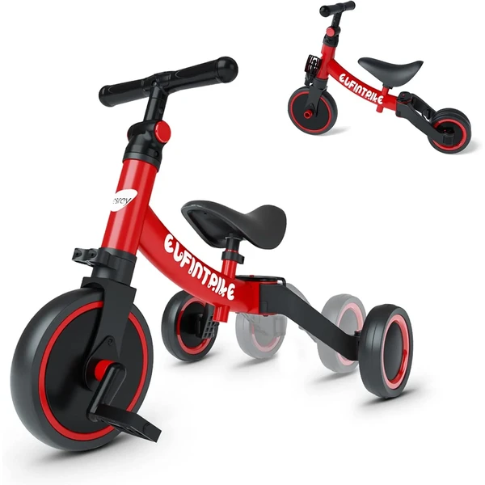

👶 2 años
Triciclo evolutivo 5 en 1 besrey
Un triciclo que cambia de modo con un solo botón: triciclo de pedales, andador sin pedales o bicicleta de equilibrio, entre otros. El asiento y el manillar se ajustan para acompañar al niño según crece.
⭐
¿Por qué nos gusta?
- ✔Cinco modos de uso en un solo triciclo.
- ✔Asiento y manillar ajustables.
- ✔Diseño curvo sin ángulos agudos.
💬
Lo que más destacan las familias
Lo que más suele gustar es que el triciclo acompaña el crecimiento del niño, pudiendo cambiar de modo sin necesidad de comprar uno nuevo cada pocos meses. También se agradece que el ajuste del asiento y el manillar sea rápido y sencillo.